Nourish7 现炖燕窝
老招牌为您现炖，4 小时送达你家。
到店用餐也可以，您用餐，我们炖，吃完饭就带回家。
100ml
每瓶 3.6g
燕窝 4小时送达
新鲜到家
每瓶 3.6g
燕窝 4小时送达
新鲜到家
RM38 / 瓶
RM198 / 6 瓶
推荐配套
推荐配套
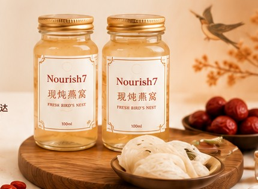
现炖，才是 Nourish7 的重点
燕窝珍贵，重点是吃好的、吃新鲜的、吃得安心。Nourish7 由老招牌负责现炖，让您不用麻烦，也能享用一份有品质感的养生甜品。
适合什么场景？
适合规律建立固定保养习惯的顾客。
适合注重仪式感、保养与生活品质的女生。
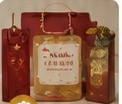
送礼大气6 瓶装适合送家人、客户或重要朋友。
现炖燕窝作为甜品，体面又有心意。
VIP 级别甜品，适合招待重要来宾。
到老招牌用餐时，吃完饭就带回家。
一星期 6 瓶，
一人月一个食程
Nourish7 推荐一星期享用 6 瓶，适合想要建立稳定养生习惯的顾客。
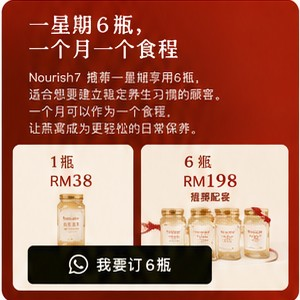
我要订 6 瓶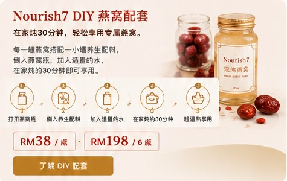
选择适合您的口味
不同年龄、用途和喜好，可以选择不同搭配。第一次尝试可以从原味冰糖开始。
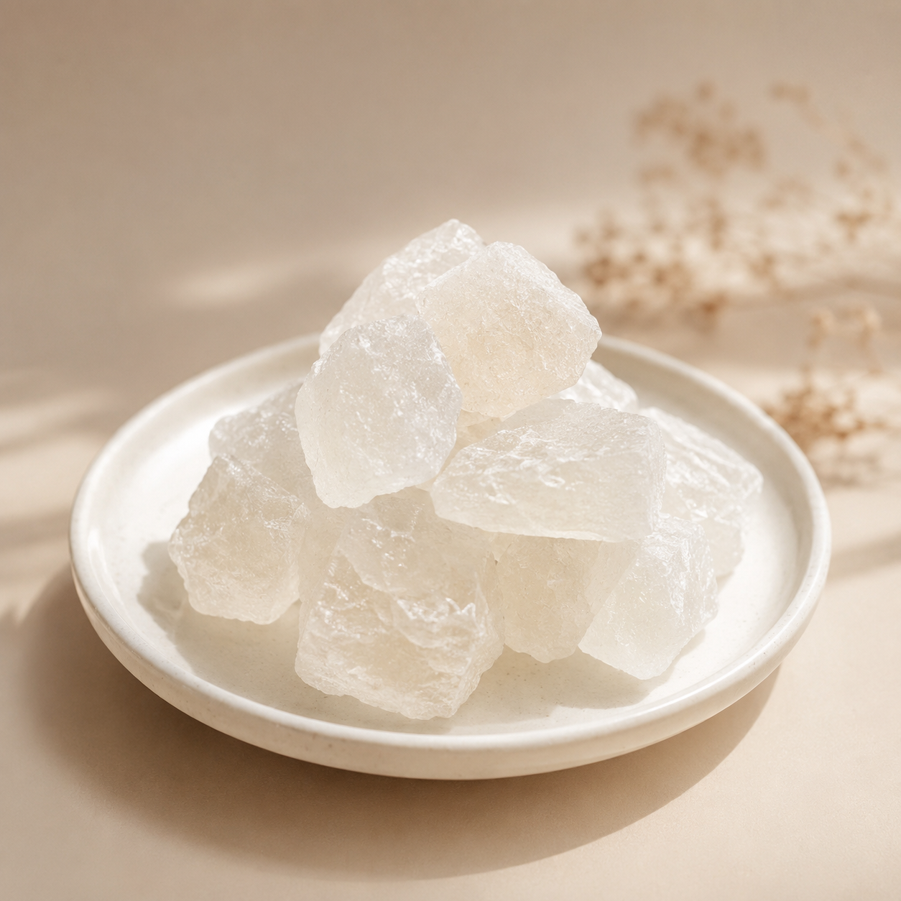
原味冰糖适合清甜，第一次尝试最稳。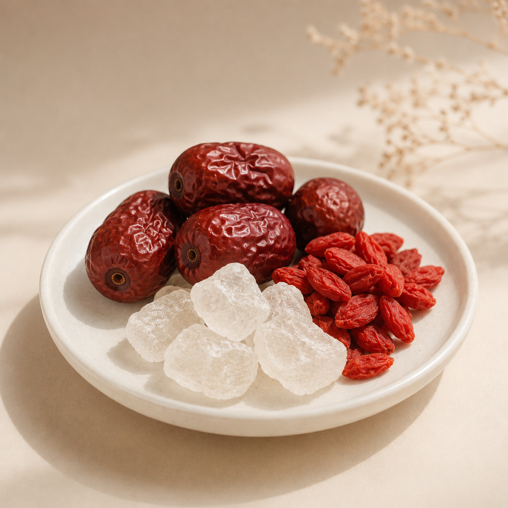
冰糖枸杞红枣温润养生，适合日常保养与长辈。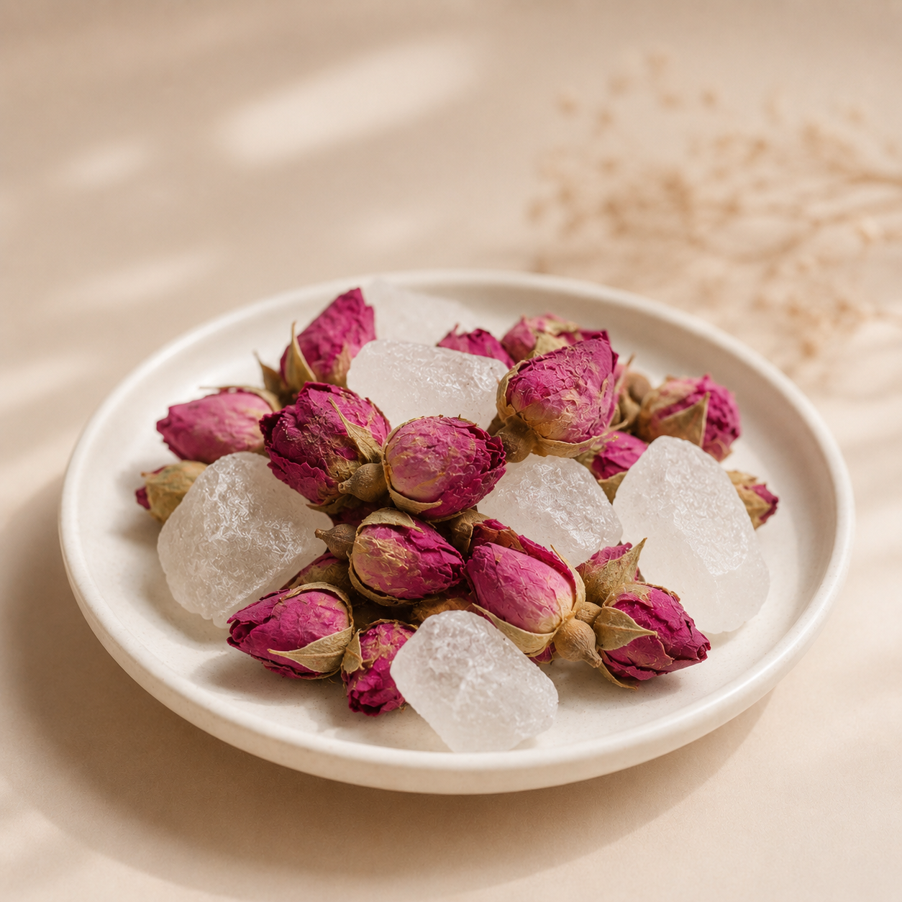
冰糖玫瑰淡淡花香，适合女生保养。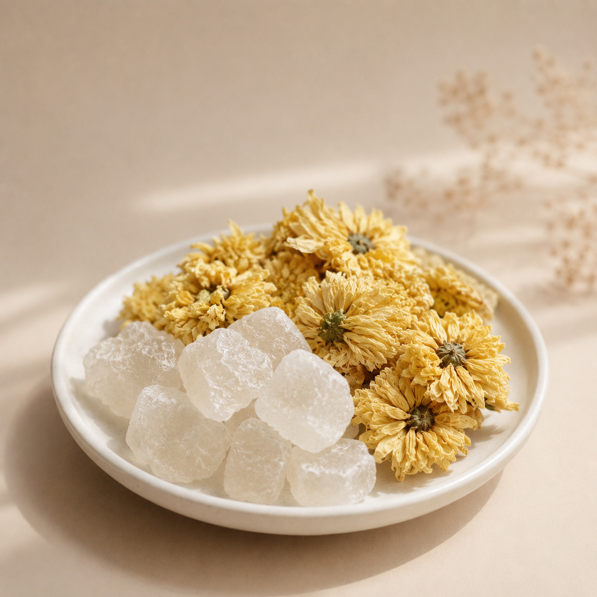
冰糖菊花清甜口感，适合饭后享用。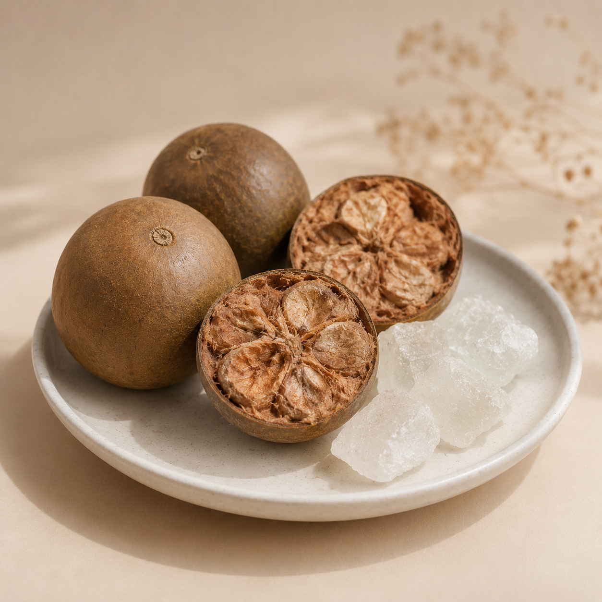
罗汉果糖清甜不腻，适合喜欢轻甜口味。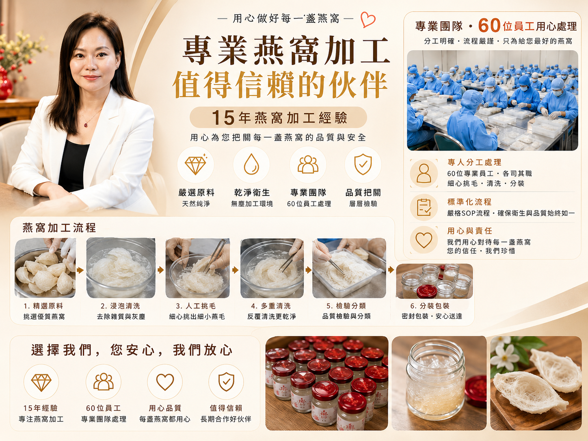
每一盏燕窝，都细心处理
不知道选哪一种？
让 Nourish7 AI 先了解您的年龄、用途、口味偏好，帮您推荐合适的现炖燕窝或 DIY 配套。
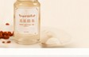
温馨提醒：燕窝属于日常养生食品，并非药物。如孕妇、过敏体质或特殊健康状况者，建议先咨询医生或专业人士。